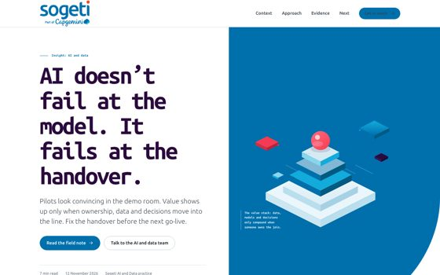
01Insight
Insight article
A long-form POV with a sticky contents rail, an argument, a figure and a one-page summary export.
Sogeti HTML effectiveness
Fourteen single-file artifacts for work that does not fit in a deck. Brand-faithful, evidence-led, and gated against the tells of machine-made UI.

A long-form POV with a sticky contents rail, an argument, a figure and a one-page summary export.
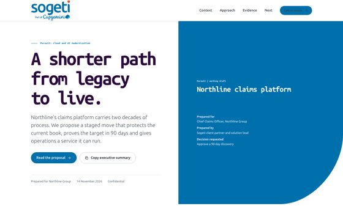
The situation, the ask, the approach, the value case and the decision, in a document a client can read without you.
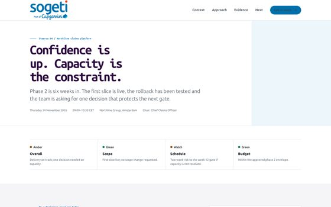
RAG status, three decisions, delivery confidence and the risks that can still move the gate.
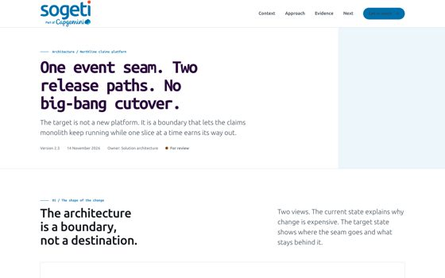
Current and target diagrams, a strangler boundary, design decisions and cutover rules. No decorative tech art.
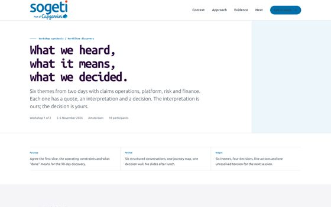
Six themes, each with a quote, an interpretation and a decision. Select the ones that belong in the readout.
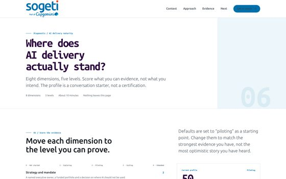
Eight dimensions, a live radar, three next moves and a Markdown export. A conversation tool, not a certification.
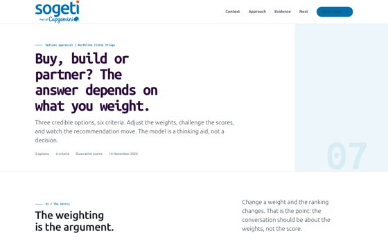
Weighted criteria, adjustable scores and a recommendation that moves when the argument does.
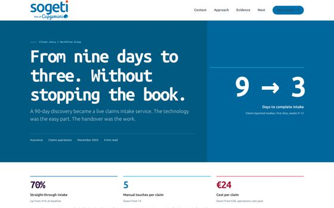
A 90-day proof, told through the handover: challenge, approach, outcomes and what we would do differently.
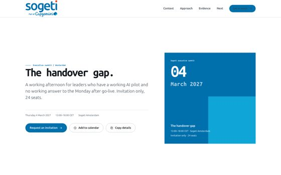
An executive summit with an agenda, roles instead of stock portraits, and a working calendar download.
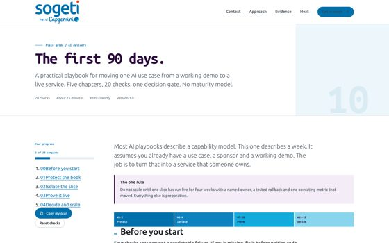
Twenty checks across five chapters, with saved progress, a decision gate and a personal plan export.
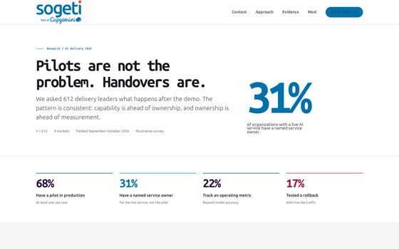
A survey narrative with direct-labelled charts, a method note and a clear line between evidence and illustration.
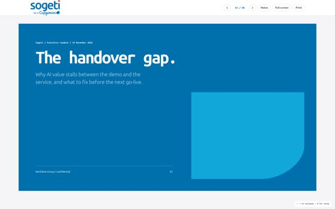
Eight 16:9 slides with keyboard navigation, speaker notes and a print-to-PDF path. No slideware dependency.
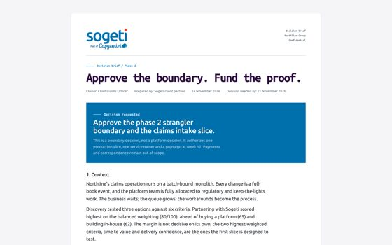
A one-page decision record: context, options, recommendation, risks, conditions and sign-off.
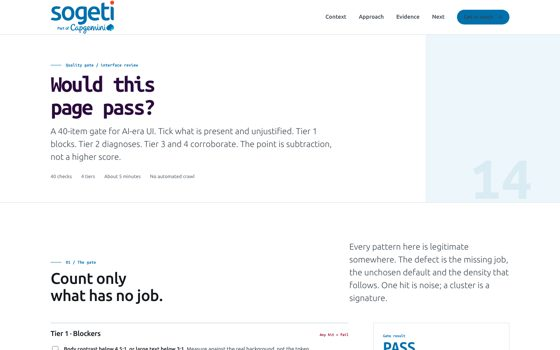
Forty checks across four tiers, a live verdict and an exportable audit record. The gate the other files pass.
All client names, quotes and figures in the reference templates are illustrative. Replace them with approved facts before external use. The brand PDF is in reference/; the research is in reference/research/.